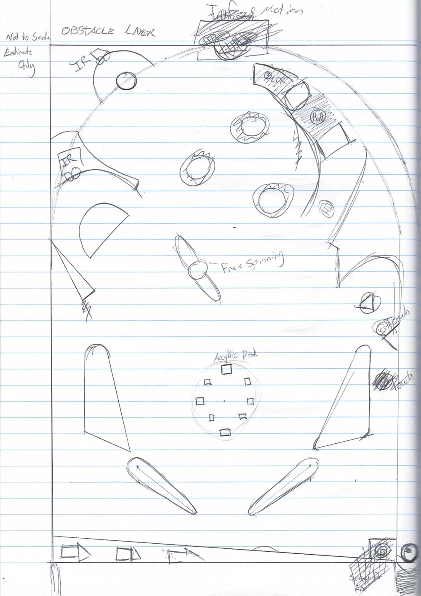
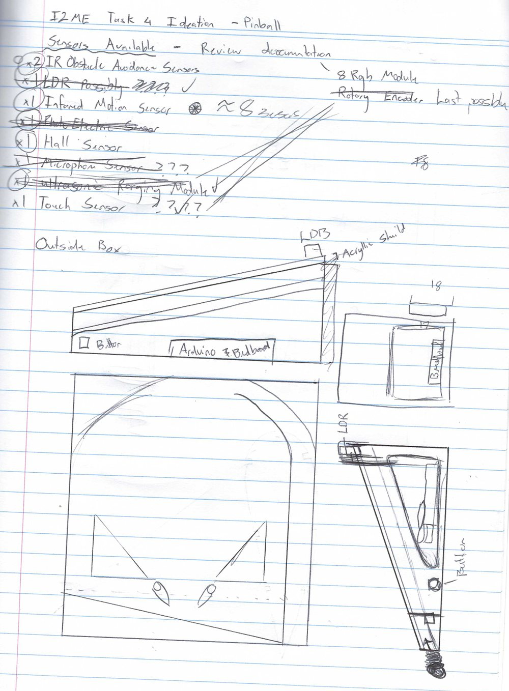
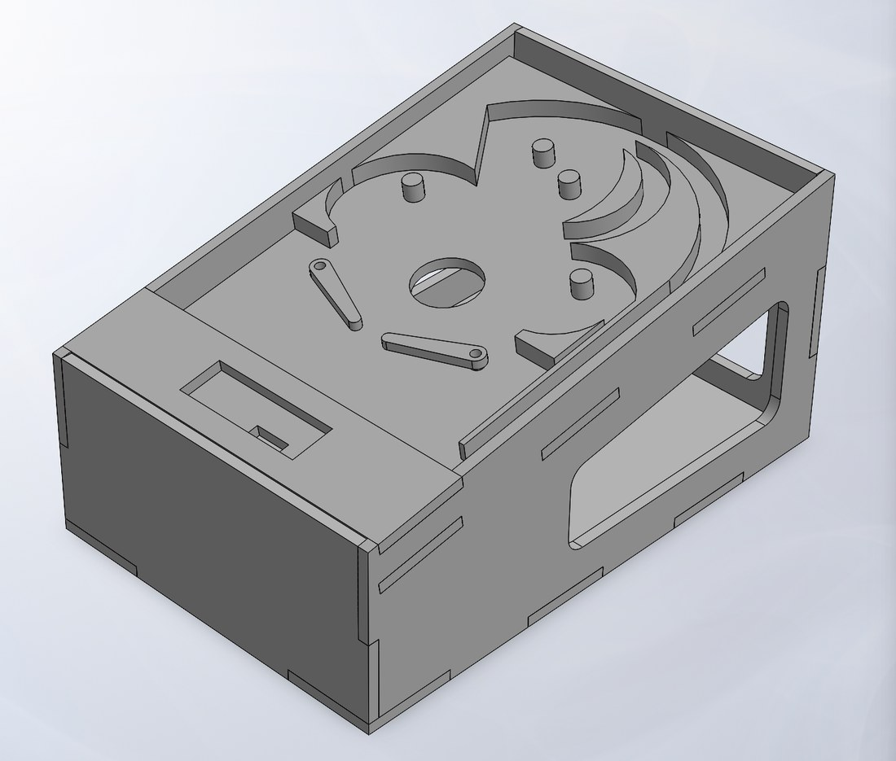
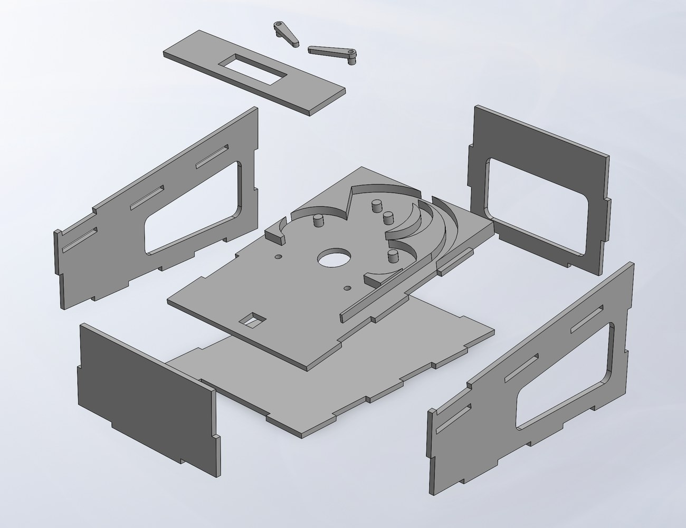
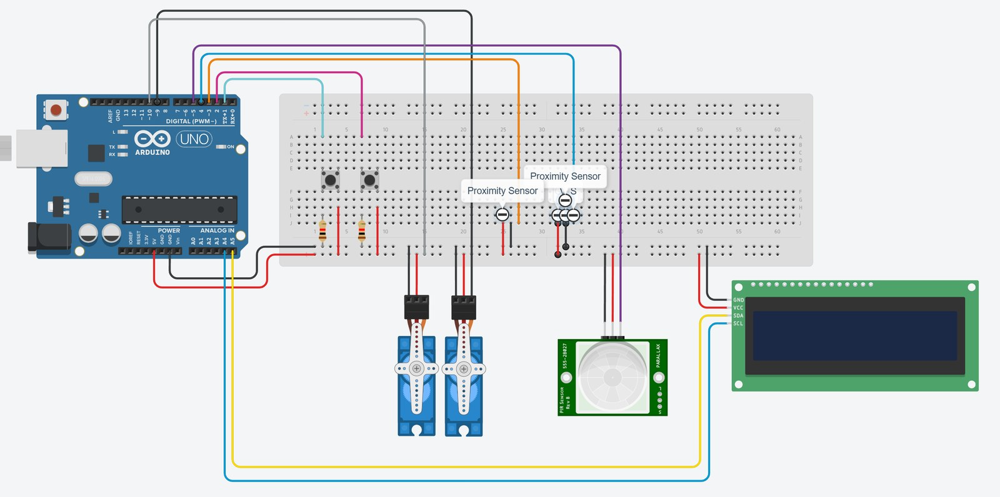
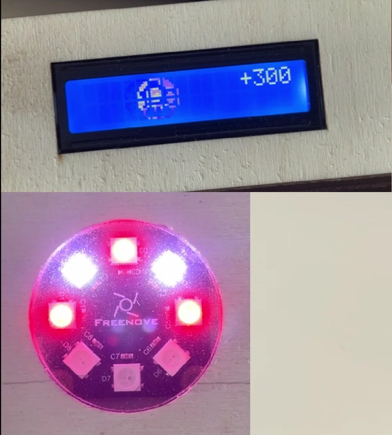

- Built with
- Arduino Uno 4, Electronics
- Skills
- Laser cutting, 3D printing, CAD
- Software
- SolidWorks, Arduino IDE
At a glance
Overview
Given the task of creating a mechatronics project that incorporated input, output and movement I decided to make a Pinball machine. I chose a pinball machine since I thought that it was a suitable challenge that had real difficulty in software such as timing and non-blocking code and I also wanted to learn to use the laser cutter with SolidWorks as my previous experience, I was using Adobe Illustrator with 2D files. It also offered the opportunity to 3D print parts which I hadn't been able to do since 2019 and had very little experience in. I knew these skills would be important to develop with the upcoming Warman challenge that I would do in 2026 so I used this project to learn these skills.
How it works
Press both buttons to start the game. A 120s countdown starts. Launch the pinballs onto the track and use the buttons on either side of the case to control each servo bat. Try and hit the different IR sensors to score points. Each IR sensor has different points and animations that are played. Once the 120s ends the game is over, the screen displays final points and both buttons need to be pressed to reset to the start game screen.
Gameplay video
Design and build
Inspiration
My inspiration is from space cadet pinball which was likely the first computer game I played when I was very young. When I finally found it after years of not knowing what it was except in a distant memory, I thought it would be a fun nostalgic opportunity to recreate it in a tabletop minigame.

I was also inspired by working around people completing the 2025 Warman challenge who use lasercut plywood to keep their machines light and finger joints to assemble the frames of their machines. Combining both these ideas I started to come up with a design in SolidWorks that I could make.
Initial Design
The initial design was to have a simplified version of space cadet pinball with multiple sensors at various positions, however this was later simplified to only 3 sensors since I found in testing that for one the SG90 servos I had aren't very fast so aiming for further targets was going to be really difficult, two the sensors that would easily integrate into a plywood frame were IR sensors rather than ultrasonic and hall effect and I only had 2 IR sensors, the final challenge was ensuring the Frame was not too large as to not waste material and guarantee that the servo could hit the ball to the top of the frame.


Very Rough Sketches!
The initial design tries its best to incorporate as many elements as possible of the original game, but it just wasn't feasible to add this much so I heavily simplified it when I began the CAD. The sketches still demonstrate the structure, with a ramped incline, room for a breadboard, Arduino and buttons in housing below the pinball track. What was essential was understanding that the ball needs to move through a tunnel of some description for the IR sensor to reliably trip when the ball travels past it. The sketches helped me to work out where these paths would be. It also helped me get an idea of the scale it should be, where I estimated that the length of the base should be around 40cm.
CAD
This was my first time using SolidWorks for Laser cutting and finger joints. Whilst I have experience with finger joint laser cutting i used Adobe Illustrator in the past. Whilst Illustrator is easier for a beginner, it became clear quite quickly that using SolidWorks makes the process far easier as you can define equal, parallel and perpendicular relations easily and then create an assembly file where every overlap or incorrect finger joint is visible. In the past when making acrylic boxes with the finger joints I've had issues with lengths of joints being slightly too large, but being able to view it in 3D makes it very difficult to make this issue.
From this I was able to design how the ramp would slot into the sides, how the LCD would be mounted (Press Fit) and how I would access the circuitry, which I decided to add rounded cutouts to each side of the frame. I laser cut the frame out of 6mm plywood and using exact dimensions created a perfect press fit so I didn't need to re-cut anything and the first version was suitable for the final frame. Even the laser cut acrylic disk for the RBG LED disc was a perfect press fit.


SolidWorks assembly and exploded view
However, what I forgot to make in my design was cutouts for the sensors I was going to use. To add them I ended up having to use a drill, hand saw and files to create the cutouts for these parts. Another later issue was the incline was slightly too much for the balls to roll all the way, so I had to slightly prop the front of the pinball case up when playing
3D Printing
Then I designed the servo bat to be 3D printed and slot onto the servo motor. I wanted to create a tight fit so I wouldn't have to use glue and ruin the servos, but this was practically impossible with the 3D printer I had available which was an UltiMaker printer that couldn't print clean layer lines or consistent tolerances. Even when I printed a tight fit, the PLA i had access to would often soften and lose its tight fit with use. I created a backup version of the bats which would fit onto a 28BYJ Stepper motor, but this wasn't a solution as the motor wasn't fast enough to hit the ball. The solution was to put the servo bats into boiling water, use pliers to crimp them onto the servos and then take them off and freeze them to set them as a really tight fit. Another issue I was having was finding a suitable pinball as metal pinballs would be too heavy; the solution was to 3D print some lightweight and small PLA balls that the servo could easily hit very far.
Component Selection
I decided to use SG90 servos since they came in the kit and purchasing another was relatively affordable compared to stronger servos. The issue with them was the speed at which they could hit the pinballs, but to rectify this I made super light pinballs out of PLA and that resolved the issue. Upgrading to a stronger servo wouldn't have worked because I was requiring speed not strength which better servos like an MG90 or MG995 couldn't solve.
I decided to use IR sensors because building a housing that would let the ultrasonic work was unfeasible. I tried to use a motion sensor by taking off the dome and using it as IR sensor to mixed success. I would've use Hall effect, but the balls were now plastic so it couldn't be used. I also considered using an LDR but couldn't get it to consistently recognise a ball rolling over it so I didn't use it in the end.
I found that the buttons that I had from my mechatronics kit which are just standard larger buttons were perfectly suitable, and I soldered them to wires that plugged into the breadboard to mount to the side of the frame.
I used Freenove's RGB LED pixel ring & the LCD Screen to add animations, flashes when sensors were reached and keep time and score.

Code and challenges
Animations
I wanted to animate my LCD and RGB LED pixel to give some extra complexity to the project. This started as create custom characters so I could have a symbol or character scroll across the LCD. To do this I used Custom Glyph Generator by nonnullish on GitHub to design custom functions I could call and iterate through moving a pixel to the left in the code. I designed a UFO picking up a cow to match the space cadet theme and a mario style mushroom. These were triggered by the IR sensors for example the left one triggered UFO animation and right sensor triggered the mushroom. The LED pixel plays matching animations, when the UFO appears it draws a green circle, when the mushroom appears it lights the top half of the 8 pixels in an alternating pattern of red and white. I used this page LCD Animation and Gaming | Arduino Project Hub to consider how to animate the LCD symbols from left to right and whilst it wouldn't work for me as I needed non-blocking code and it uses for and while loops, it was useful in considering how to animate so I thought it was good to mention here

Challenges
One of the physical challenges I faces was working out a way to launch the ball onto the track. I ended up solving this by using an offcut of plywood glued to a trimmed nail with two springs from a pen at the end. This worked surprisingly well and launched the pinball perfectly. Usually in pinball the machine restricts how many balls you get but in my mini pinball you are given a time to score as many points as possible and it stops counting after the time runs out.
Another physical challenge was the balls would get stuck under the servo bat on the ramp towards the launcher, this was because of the burnt edges of the laser cut material providing too much friction. The solution for this was simple as I covered it with masking tape so that it would still roll into the launcher.
The next challenge I faced was implementing non-blocking code. initially this wasn't an issue as I knew to avoid for and while loops and to use only if statements and initial testing with servos being pressed simultaneously worked perfectly fine. The challenge arose when adding the animations into the game when points were scored as my original animations were too complex and would create bugs were the animation would get stuck or not fully work. This mainly happened to the LED pixel, so i simplified their animations from the test file and everything behaved normally again.